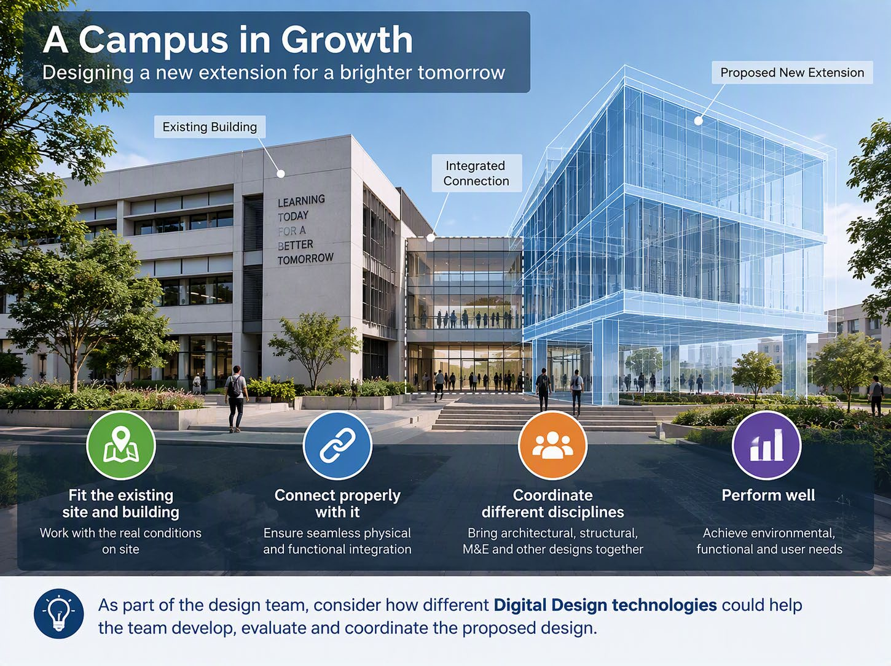
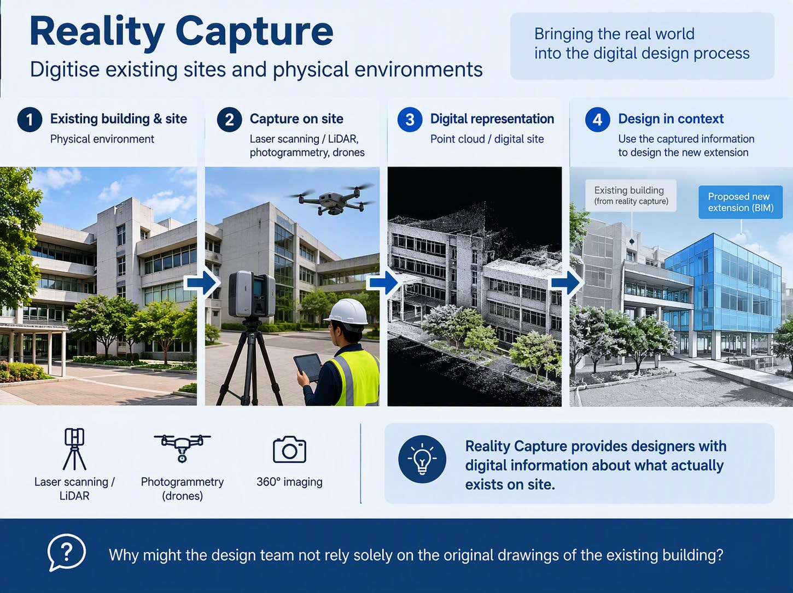
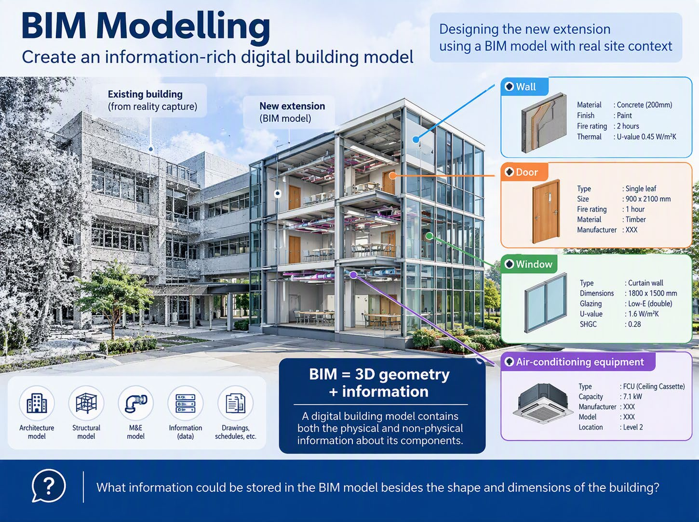
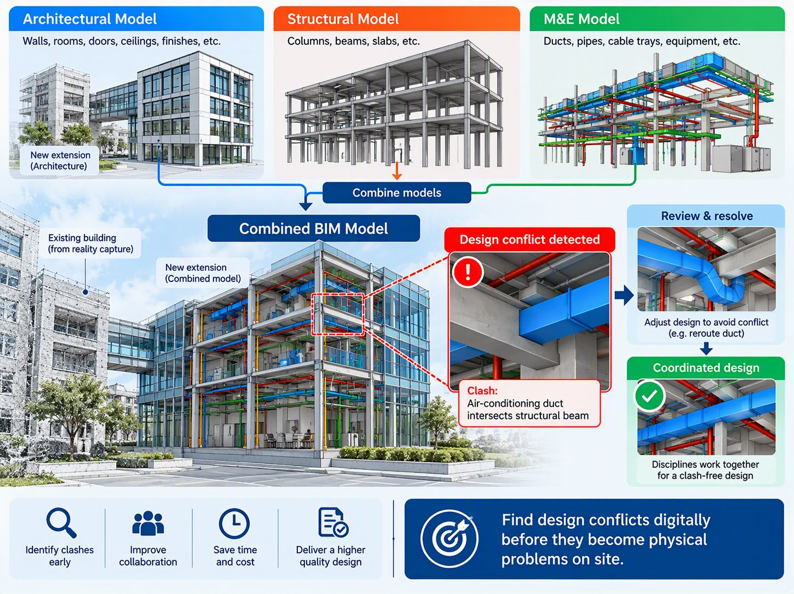
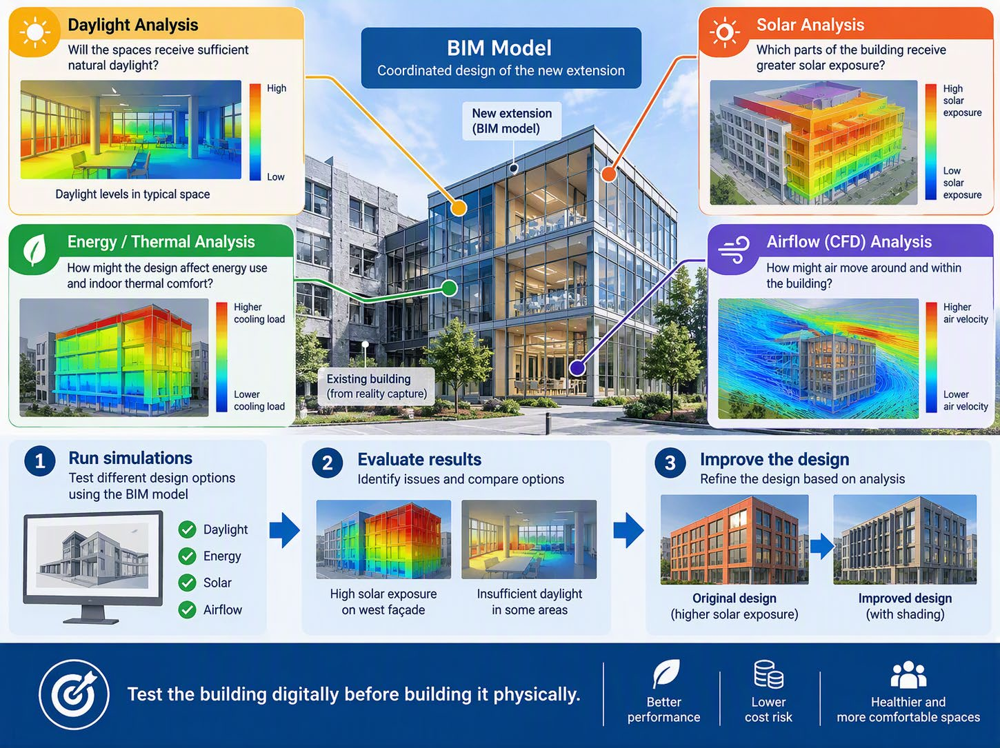
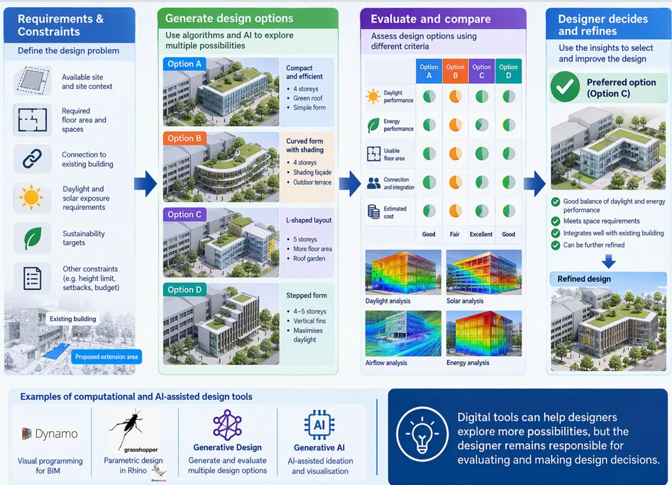

LLP1 · Lesson 5
Introduction to Integrated Digital Delivery (IDD) and Application of Technologies for Digital Design and Digital Fabrication
Lesson outcomes
By the end of this lesson, you will be able to:
- Explain how Digital Design technologies support the building design process.
- Identify different Digital Design technologies and their applications.
- Recommend suitable Digital Design technologies for a given project scenario.
Opening scenario: A campus in growth
An existing building needs more space, so a new extension building will be developed and connected to it.
The challenge is not simply to design another building. The new extension needs to fit the existing site and building, connect properly with it, coordinate the different disciplines, and perform well.
- Fit the existing site and buildingWork with the real conditions on site.
- Connect properly with itEnsure seamless physical and functional integration.
- Coordinate different disciplinesBring architectural, structural, M&E and other designs together.
- Perform wellAchieve environmental, functional and user needs.

As part of the design team, consider how different Digital Design technologies could help the team develop, evaluate and coordinate the proposed design. The next five sections each cover one category.
Category 1 of 5
Reality Capture
Digitise existing sites and physical environments.
Reality Capture uses digital technologies to capture the existing physical environment and convert it into digital information that can support design.
Before designing the new extension, the design team needs accurate information about the existing building and surrounding site, especially where the new and existing buildings will connect.
Technologies
- Laser scanning / LiDAR captures the shape and dimensions of the physical environment.
- Photogrammetry creates digital information from multiple photographs.
- Drones can capture site imagery and information from above.
- 360° imaging records the site in all directions.
How it works
- Existing building & siteThe physical environment.
- Capture on siteLaser scanning / LiDAR, photogrammetry, drones.
- Digital representationA point cloud or digital site.
- Design in contextUse the captured information to design the new extension.

Key idea: Reality Capture provides designers with digital information about what actually exists on site.
Think about it: Why might the design team not rely solely on the original drawings of the existing building?
Self-check
Category 2 of 5
BIM Modelling
Create an information-rich digital building model.
The new extension is designed using a BIM model placed in its real site context, with the existing building coming from Reality Capture.
BIM = 3D geometry + information. A digital building model contains both the physical and non-physical information about its components.
Example: information stored in the model
- Wall
- Material: concrete (200 mm) · Finish: paint · Fire rating: 2 hours · Thermal U-value: 0.45 W/m²K
- Door
- Type: single leaf · Size: 900 × 2100 mm · Fire rating: 1 hour · Material: timber · Manufacturer
- Window
- Type: curtain wall · 1800 × 1500 mm · Glazing: Low-E (double) · U-value: 1.6 W/m²K · SHGC: 0.28
- Air-conditioning equipment
- Type: FCU (ceiling cassette) · Capacity: 7.1 kW · Manufacturer · Model · Location: Level 2
A project can include an architecture model, a structural model and an M&E model, plus information (data) and drawings, schedules and more.
Example tools: Revit, Archicad.

Think about it: What information could be stored in the BIM model besides the shape and dimensions of the building?
Self-check
Category 3 of 5
BIM Coordination
Combine disciplines and detect design conflicts.
Each discipline builds its own model. Coordination combines them so problems show up on screen instead of on site.
- Architectural model: walls, rooms, doors, ceilings, finishes, etc.
- Structural model: columns, beams, slabs, etc.
- M&E model: ducts, pipes, cable trays, equipment, etc.
How it works
- Combine modelsArchitectural, structural and M&E models are joined into one combined BIM model.
- Design conflict detectedExample clash: an air-conditioning duct intersects a structural beam.
- Review & resolveAdjust the design to avoid the conflict, e.g. reroute the duct.
- Coordinated designDisciplines work together for a clash-free design.
Benefits
- Identify clashes early
- Improve collaboration
- Save time and cost
- Deliver a higher quality design
Example tools: Navisworks, BIMcollab.

Key idea: Find design conflicts digitally before they become physical problems on site.
Self-check
Category 4 of 5
Simulation & Analysis
Evaluate design performance before it is built.
Using the coordinated BIM model of the new extension, the team can test how the building will perform.
- Daylight analysis
- Will the spaces receive sufficient natural daylight?
- Energy / thermal analysis
- How might the design affect energy use and indoor thermal comfort?
- Solar analysis
- Which parts of the building receive greater solar exposure?
- Airflow (CFD) analysis
- How might air move around and within the building? CFD stands for Computational Fluid Dynamics.
How it works
- Run simulationsTest different design options using the BIM model: daylight, energy, solar, airflow.
- Evaluate resultsIdentify issues and compare options, e.g. high solar exposure on the west façade, or insufficient daylight in some areas.
- Improve the designRefine the design based on the analysis, e.g. add shading.
Benefits
- Better performance
- Lower cost risk
- Healthier and more comfortable spaces
Examples: energy simulation, daylight analysis, CFD.

Key idea: Test the building digitally before building it physically.
Self-check
Category 5 of 5
Computational & AI-assisted Design
Use algorithms and AI to explore or improve design solutions.
How it works
- Requirements & constraintsDefine the design problem: available site, required floor area and spaces, connection to the existing building, daylight and solar exposure requirements, sustainability targets, and other constraints (e.g. height limit, setbacks, budget).
- Generate design optionsUse algorithms and AI to explore multiple possibilities, e.g. a compact form, a curved form with shading, an L-shaped layout, a stepped form.
- Evaluate and compareAssess options using different criteria: daylight, energy, usable floor area, connection and integration, estimated cost.
- Designer decides and refinesUse the insights to select and improve the design.
Example tools
- Dynamo
- Visual programming for BIM.
- Grasshopper
- Parametric design in Rhino.
- Generative Design
- Generate and evaluate multiple design options.
- Generative AI
- AI-assisted ideation and visualisation.

Key idea: Digital tools can help designers explore more possibilities, but the designer remains responsible for evaluating and making design decisions.
Self-check
Summary
Quick reference
Various technologies can be applied in Digital Design. They can be broadly grouped into these categories:
| Category | What is involved | Examples |
|---|---|---|
| BIM Modelling | Create an information-rich digital building model | Revit, Archicad |
| BIM Coordination | Combine disciplines and detect design conflicts | Navisworks, BIMcollab |
| Reality Capture | Digitise existing sites and physical environments | Laser scanning, LiDAR, drone photogrammetry |
| Simulation & Analysis | Evaluate design performance before it is built | Energy simulation, daylight analysis, CFD |
| Computational & AI-assisted Design | Use algorithms and AI to explore or improve design solutions | Dynamo, Grasshopper, generative design, Generative AI |